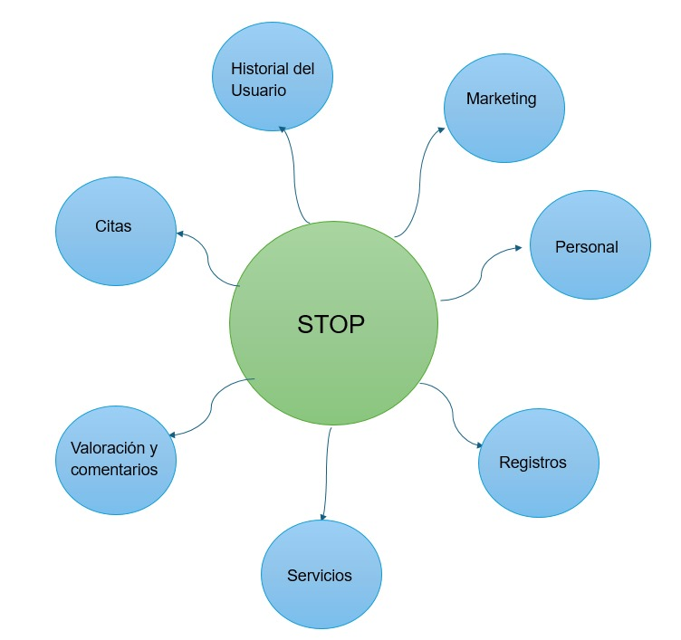
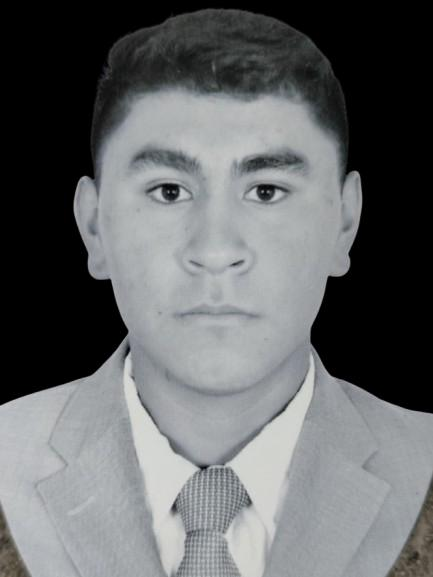
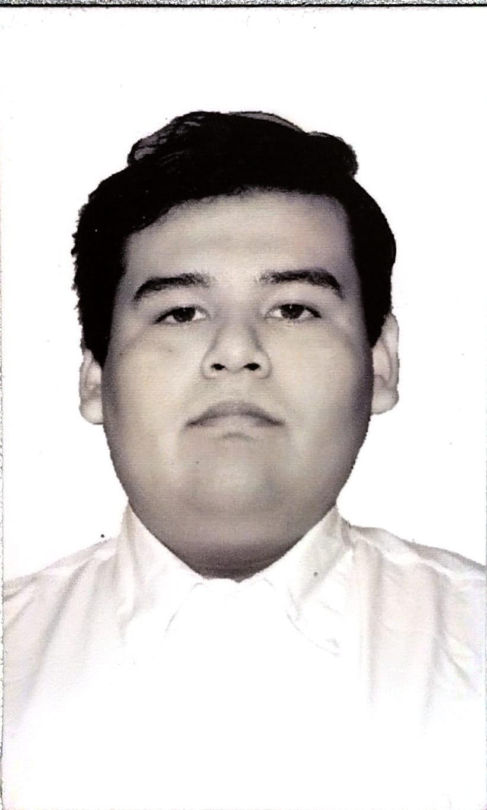
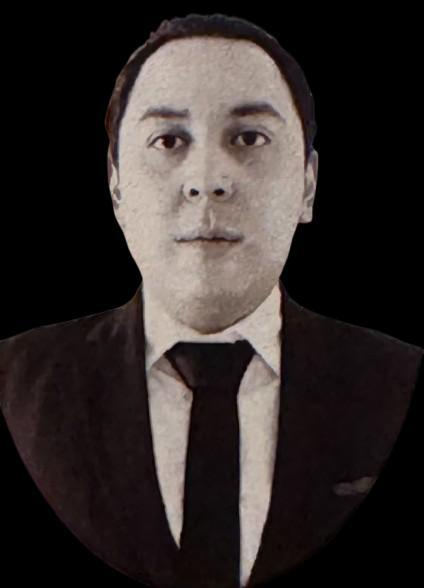

STOP es un sistema creado en el Instituto Tecnologico Superior del Occidente del Estado de Hidalgo (ITSOEH) destinado a modernizar el acceso a los tramites presidenciales mediante el desarrollo de un software integral
La problematica es la dificultad significativa que experimentan los ciudadanos al intentar acceder a los servicios gubernamentales. Actualmente, muchos tramites son excesivamente lentos y complicados, lo que resulta en tiempos de espera prolongados y procesos que carecen de claridad. Esta situacion genera frustracion y descontento entre los ciudadanos.
Desarrollar un sistema web que, mediante la implementación de tecnologías y herramientas de desarrollo de software de vanguardia permita optimizar los procesos de gestión de trámites y citas en la presidencia de Mixquiahuala, con el fin de reducir significativamente los tiempos de espera y mejorar la experiencia de los usuarios.
Se fragmento todo el proyecto en subsistemas de esta manera ya que es mass facil y eficiente para trabajar en el proyecto ayudandonos a mejorar la gestion y organizacion, que permitira manejar cada area de manera mas eficiente.
|  |  |  | |
| Brayan Angeles Dorantes | Cristian Jesus Aguilar Jimenez | Angel Dayan Euroza Mera | Pedro Lopez Flores |
| 22011934@itsoeh.edu.mx | 22011476@itsoeh.edu.mx | 22011129@itsoeh.edu.mx | 22011939@itsoeh.edu.mx |